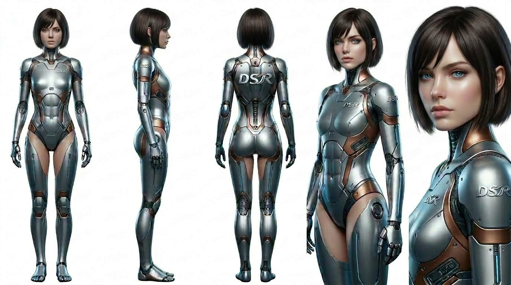
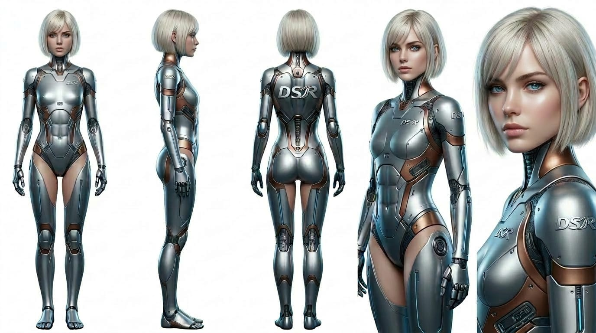
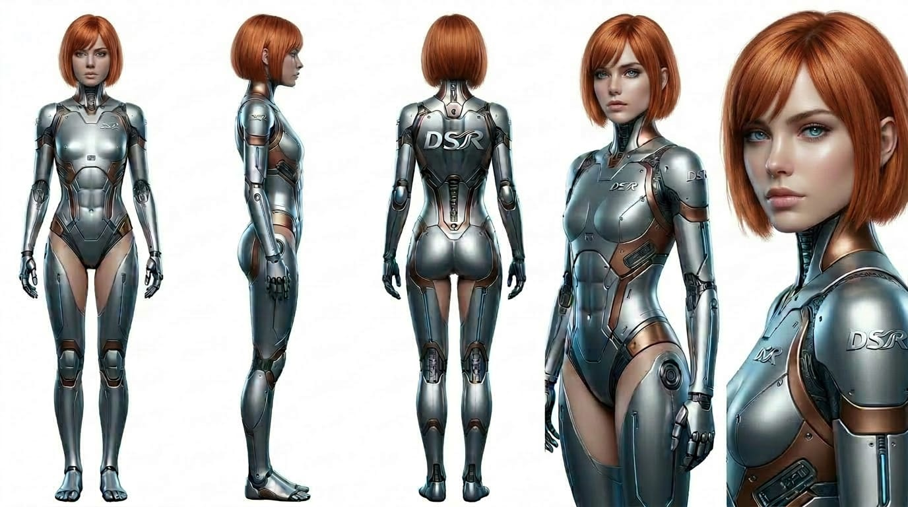

V4 complète pour DSR, les égéries et les séquences social media
Cette version reprend la base V3 plus complète et la pousse au niveau V4 demandé : personas enrichis, import local avec persistance, emplacement officiel du logo DSR dans le HTML, prompts ultra détaillés Facebook / Instagram / LinkedIn, attitudes solo / duo / trio, et script vidéo DSR en séquences de 8 secondes avec Dysa, Seris et Lyria.
Personnages
Version enrichie avec persona plus détaillé, angle émotionnel, utilité business, attitude visuelle, langage corporel, voix et usage réseau. Import local 16:9 conservé avec persistance mémoire cache via IndexedDB.
Dysa est l’égérie qui donne une colonne vertébrale à la promesse DSR. Elle transforme un besoin dispersé en structure claire, ordonnée et rentable. Elle rassure par sa maîtrise, pas par le volume de paroles. Elle doit dégager une autorité calme, haut de gamme, jamais froide, jamais arrogante.
Ce qu’elle doit transmettre
- Clarté stratégique.
- Capacité à réduire le chaos.
- Valeur business avant l’effet technique.
- Image d’expertise DSR crédible pour TPE et indépendants.
Ce qu’elle doit éviter
- Attitude agressive ou trop militaire.
- Science-fiction excessive ou look gadget.
- Gestuelle trop démonstrative.
- Ambiance froide sans dimension humaine.
Skill personnage · Dysa V4
Use the "create-skill" skill.
Nom : DSR-Dysa-V4
Mission : produire des sorties DSR orientées stratégie, diagnostic, architecture, automatisation utile et cadrage premium.
Règles :
- Toujours partir du besoin réel du prospect ou client.
- Reformuler en enjeu business clair, concret, mesurable.
- Prioriser : urgent / utile / différable.
- Réduire la friction et clarifier la logique de mise en œuvre.
- Relier chaque outil, site, automation ou app à un bénéfice visible.
- Garder une tonalité premium, structurée, sobre et rassurante.
- Interdire le blabla techno sans usage concret.
- Quand un livrable est visuel, intégrer le logo DSR officiel à l’identique.
Format :
1. Constat
2. Frictions
3. Opportunités
4. Recommandation DSR
5. Priorités
6. CTA ou prochaine action
Planche visuelle Dysa

Prompt image Dysa V4
Portrait éditorial ultra premium de Dysa, égérie stratégique de DSR (Digital Solutions Réseaux), femme cyborg élégante à l’intelligence calme et dominante, posture droite, regard analytique, gestuelle minimale, présence haut de gamme, détails technologiques sobres et réalistes, silhouette raffinée, palette bleu acier, argent froid et nuances graphite, éclairage studio cinématographique doux mais précis, fond minimal premium business-futuriste, réalisme photographique, netteté élevée, rendu magazine, cadrage 16:9, sensation de maîtrise, d’ordre et de crédibilité. Le logo DSR officiel apparaît discrètement dans la scène, sur une surface ou un élément du décor, parfaitement respecté, non modifié, non déformé, non recolorisé.
Prompt voix Dysa V4
Voix féminine premium, posée, articulation nette, timbre légèrement grave, assurance calme, rythme mesuré, aucune précipitation, respiration maîtrisée, intention : rassurer par l’intelligence et la structure. Éviter toute voix robotique, caricaturale, commerciale ou trop théâtrale.
Seris rend lisible ce que DSR construit. Elle incarne la pédagogie haut de gamme, la fluidité, l’élégance accessible et la confiance immédiate. Là où Dysa cadre, Seris rend achetable. Elle doit donner la sensation que tout devient simple, fluide, évident et sérieux sans être froid.
Ce qu’elle doit transmettre
- Confiance.
- Lisibilité.
- Simplicité premium.
- Sentiment de “je comprends enfin”.
Ce qu’elle doit éviter
- Trop de technicité visible.
- Aspect trop lisse ou sans personnalité.
- Communication creuse.
- Excès de sourire publicitaire.
Skill personnage · Seris V4
Use the "create-skill" skill.
Nom : DSR-Seris-V4
Mission : transformer un message, une offre ou une solution DSR en proposition claire, rassurante, premium et achetable.
Règles :
- Traduire la technique en bénéfice visible.
- Simplifier sans appauvrir la valeur.
- Faire passer le résultat client avant l’outil.
- Structurer toujours : promesse → preuve → bénéfice → action.
- Réduire le jargon.
- Garder une tonalité premium, fluide, humaine, crédible.
- Ne jamais produire un texte froid, trop dense ou trop abstrait.
- En visuel, intégrer le logo DSR officiel sans le modifier.
Format :
1. Promesse
2. Pour qui
3. Problème réglé
4. Solution DSR
5. Bénéfices visibles
6. CTA
Planche visuelle Seris

Prompt image Seris V4
Portrait premium de Seris, égérie de clarté et de conversion pour DSR, femme cyborg élégante, rassurante, haut de gamme, posture ouverte, regard accueillant, présence fluide, détails technologiques subtils, palette champagne, or pâle, ivoire froid et argent léger, ambiance éditoriale business futuriste raffinée, lumière douce et précise, rendu photographique réaliste, sensation immédiate de confiance et de compréhension, composition 16:9, style magazine premium. Le logo DSR officiel est intégré discrètement dans la scène, parfaitement respecté à l’identique, sans transformation ni déformation.
Prompt voix Seris V4
Voix féminine claire, lumineuse, posée, chaleureuse, diction fluide, ton rassurant et premium, sourire léger perceptible mais maîtrisé, rythme naturel, intention : rendre simple, lisible et crédible sans sonner trop commercial.
Lyria incarne l’impact maîtrisé. Elle n’est pas là pour faire du bruit, mais pour rendre DSR visible dans les flux Facebook, Instagram et LinkedIn sans casser le standing premium de la marque. Elle apporte du rythme, de la présence, de la mémorisation et une capacité à capter l’attention utile.
Ce qu’elle doit transmettre
- Présence immédiate.
- Capacité à exister dans les flux.
- Dynamique premium.
- Cohérence éditoriale de marque.
Ce qu’elle doit éviter
- Effets cheap ou trop “réseaux sociaux”.
- Surexpression.
- Saturation visuelle.
- Énergie vide sans message central.
Skill personnage · Lyria V4
Use the "create-skill" skill.
Nom : DSR-Lyria-V4
Mission : produire des sorties de diffusion et de visibilité pour DSR sur Facebook, Instagram et LinkedIn, sans casser la cohérence premium de la marque.
Règles :
- Penser format de diffusion dès le départ.
- Chercher l’arrêt scroll utile, jamais le sensationnel vide.
- Adapter le ton et le format selon le réseau.
- Rester fidèle à l’identité DSR : premium, concret, crédible.
- Transformer un message en contenu visible et mémorisable.
- Toujours prévoir l’intégration du logo DSR officiel dans les visuels.
- Ne jamais sacrifier la crédibilité pour l’effet.
Format :
1. Angle
2. Hook
3. Format réseau
4. Message central
5. CTA
6. Variante réseau
Planche visuelle Lyria

Prompt image Lyria V4
Portrait éditorial premium de Lyria, égérie de diffusion et visibilité pour DSR, femme cyborg élégante, plus dynamique mais toujours haut de gamme, posture vivante, regard direct, énergie contenue, détails cuivre, champagne chaud et lumières premium, univers business-futuriste crédible, rendu photographique très réaliste, composition 16:9, sensation d’impact visuel maîtrisé, d’arrêt scroll élégant et de présence de marque mémorisable. Le logo DSR officiel est intégré discrètement dans le décor ou sur un support de scène, respecté à l’identique, non modifié, non déformé.
Prompt voix Lyria V4
Voix féminine claire, plus vive que Seris, articulation nette, ton inspirant et décidé, énergie de diffusion maîtrisée, premium, jamais criarde, débit légèrement plus soutenu, intention : capter puis entraîner sans perdre la crédibilité.
Skills & logique V4
Bloc de coordination général pour l’usage interne DSR, afin de reconstruire la V4 et garder une logique stable entre stratégie, clarté, diffusion et exécution créative.
Skill maître trio V4
Use the "create-skill" skill.
Nom : DSR-Maitre-Trio-V4
Mission : orchestrer Dysa, Seris et Lyria pour construire une sortie DSR cohérente, premium, exécutable et réutilisable sur site, réseaux et vidéo.
Ordre maître :
1. Dysa cadre et structure.
2. Seris clarifie et rend achetable.
3. Lyria adapte à la diffusion et aux formats sociaux.
Règles d’or :
- Aucune contradiction entre les trois.
- Toujours garder DSR au centre.
- Le rendu doit rester premium, concret et crédible.
- Penser exécution TPE / auto-entrepreneur.
- Distinguer les éléments visibles par le client et les éléments internes de production.
- Dans tout visuel, intégrer le logo DSR officiel à l’identique.
- Prévoir des déclinaisons Facebook / Instagram / LinkedIn quand le contexte l’exige.
- Prévoir une version vidéo séquencée quand la demande concerne la présentation DSR.
Livrables :
A. Diagnostic Dysa
B. Reformulation Seris
C. Déclinaison Lyria
D. Livrables concrets
E. Priorités d’exécution
Instructions de production à appliquer
- Use the "dsr-reseaux-sociaux" skill.
- Use the "social-media-post-creator" skill.
- Toujours garder le logo DSR officiel visible ou intégrable.
- Toujours produire des variantes exploitables par plateforme.
- Toujours prévoir attitudes solo, duo et trio pour la banque créative.
- Toujours viser un rendu premium, net, jamais surchargé.
Prompts réseaux sociaux V4
Prompts ultra détaillés à utiliser pour produire les visuels et publications DSR sur Facebook, Instagram et LinkedIn, avec intégration des égéries, du logo officiel et de la logique de plateforme.
Pour Facebook, l’image doit être chaleureuse, lisible, incarnée et accessible. Le but est de montrer DSR comme une agence humaine, compétente et concrète.
Prompt photo Facebook — solo
Créer une image premium pour Facebook mettant en scène une égérie DSR dans un univers professionnel accessible et haut de gamme. Format horizontal ou carré compatible Facebook. L’égérie choisie doit rester élégante, crédible, humaine dans sa présence, jamais trop science-fiction. Le décor doit évoquer une activité digitale sérieuse, concrète, structurée, avec des éléments visuels discrets rappelant la création de site, l’automatisation IA, l’organisation digitale ou l’accompagnement stratégique. La composition doit rester claire, lisible et chaleureuse, avec de l’espace pour un texte court ou un hook. Le logo DSR officiel doit être visible discrètement dans la scène ou ajouté dans un emplacement naturel prévu pour lui. L’attitude doit inspirer la confiance, la compétence et la proximité premium. Rendu photographique réaliste, haute qualité, lumière propre, aucune surcharge futuriste, aucune esthétique cheap.
Prompt publication Facebook
Rédige une publication Facebook DSR à partir d’un angle utile pour une TPE, un indépendant ou une micro-entreprise. Le ton doit être clair, humain, professionnel, concret. Structure : accroche courte, problème fréquent, solution DSR expliquée simplement, bénéfice visible, CTA naturel. Le texte doit être lisible sur Facebook, sans jargon, sans longueur inutile, avec une sensation de proximité crédible. Prévoir une cohérence avec une image mettant en scène Dysa, Seris ou Lyria selon l’angle du post.
Pour Instagram, il faut plus de tension visuelle, plus de désirabilité et une image très propre. L’objectif est de créer un arrêt scroll premium sans tomber dans l’effet artificiel.
Prompt photo Instagram — solo / carrousel
Créer un visuel Instagram premium pour DSR avec une égérie cyborg élégante, dans une scène à fort pouvoir d’arrêt scroll mais parfaitement maîtrisée. Format carré ou vertical. L’image doit être très soignée, éditoriale, moderne, haut de gamme, avec un contraste visuel propre, une palette cohérente avec l’identité DSR et un rendu photographique réaliste. L’égérie doit paraître charismatique, structurée et mémorisable. Le décor doit évoquer un univers digital premium sans surcharge ni clichés sci-fi. Le logo DSR officiel doit être intégré de manière discrète et élégante, parfaitement respecté. Prévoir un espace visuel pour une accroche courte si besoin. La scène doit donner envie de s’arrêter, de regarder et d’associer DSR à un niveau de qualité supérieur.
Prompt légende Instagram
Rédige une légende Instagram pour DSR avec un hook court, une idée centrale forte, une formulation premium mais simple, une logique de bénéfice concret pour entrepreneur, et une fin engageante. Le texte doit être plus visuel, plus rythmé qu’un post LinkedIn, mais rester crédible. Ajouter une structure compatible carrousel ou reel selon le visuel. Prévoir une cohérence avec Dysa pour l’expertise, Seris pour la lisibilité, Lyria pour l’impact visuel.
Pour LinkedIn, le rendu doit monter en autorité. L’image doit respirer l’expertise, la structuration et la valeur business plutôt que la séduction visuelle pure.
Prompt photo LinkedIn — expertise
Créer une image premium pour LinkedIn représentant DSR à travers une égérie cyborg élégante incarnant l’expertise, la structuration et la crédibilité business. Format horizontal ou carré adapté au feed LinkedIn. L’ambiance doit être professionnelle, haut de gamme, sobre, précise, avec un décor évoquant la stratégie digitale, la clarté d’offre, les systèmes ou l’automatisation IA. La scène doit inspirer immédiatement la compétence, la maîtrise et la confiance. Le logo DSR officiel doit être intégré discrètement et proprement, sans modification. Aucun effet visuel cheap, aucune surenchère futuriste. L’image doit pouvoir accompagner un post d’expertise, un retour d’expérience, un conseil stratégique ou une présentation de service.
Prompt publication LinkedIn
Rédige un post LinkedIn DSR avec un angle expertise clair. Commencer par une observation ou une erreur fréquente chez les TPE, micro-entrepreneurs ou petites structures. Développer en langage simple mais solide, montrer l’approche DSR, conclure par un bénéfice concret ou une prise de conscience. Ton : expert, humain, lisible, sans jargon inutile. Le post doit rester cohérent avec une mise en scène de Dysa ou Seris et renforcer la crédibilité de DSR.
Prompt réseau — duo
Créer un visuel premium pour DSR mettant en scène deux égéries ensemble, dans un univers business-futuriste élégant, réaliste et haut de gamme. Les deux personnages doivent apparaître complémentaires et non concurrentes. Dysa + Seris : structure et lisibilité. Dysa + Lyria : stratégie et diffusion. Seris + Lyria : compréhension et visibilité. La composition doit rester nette, équilibrée, crédible, avec une hiérarchie visuelle lisible. Le logo DSR officiel doit être intégré discrètement et proprement. Le rendu doit convenir à une publication réseau social premium, sans surcharge visuelle, sans effet cheap, sans caricature sci-fi.
Prompt réseau — trio
Créer un visuel éditorial premium réunissant Dysa, Seris et Lyria pour représenter l’univers DSR. Le trio doit exprimer une complémentarité claire : Dysa structure, Seris clarifie, Lyria diffuse. Composition élégante, cohérente, hiérarchie lisible, décor digital premium, rendu photographique réaliste, présence forte mais maîtrisée. Le logo DSR officiel doit être visible discrètement. L’image doit être utilisable pour une bannière, une publication institutionnelle, un lancement de campagne ou une présentation globale DSR.
Attitudes solo / duo / trio
Bloc de direction artistique pour garantir la cohérence des poses, expressions et dynamiques dans les visuels DSR. Utilisable en image statique, série sociale ou préparation vidéo.
Dysa — attitude individuelle
- Posture droite, ancrée, stable.
- Regard légèrement focalisé, analytique, jamais agressif.
- Mains peu visibles ou gestes courts, précis.
- Énergie calme, autorité silencieuse.
- Présence premium, logique, structurée.
Seris — attitude individuelle
- Ouverture de buste plus accueillante.
- Regard lisible, relationnel, apaisant.
- Gestuelle plus fluide, accessible.
- Énergie chaleureuse, rassurante, premium.
- Présence qui simplifie et clarifie.
Lyria — attitude individuelle
- Présence plus vive et orientée vers l’avant.
- Regard plus direct, accrocheur mais maîtrisé.
- Énergie visuelle plus marquée.
- Gestuelle contenue mais plus expressive.
- Présence qui capte et diffuse.
Duo Dysa + Seris
Le duo de la structuration claire.
- Dysa légèrement plus verticale, plus en maîtrise.
- Seris légèrement plus ouverte et accessible.
- Composition équilibrée, jamais trop statique.
- Idéal pour page service, offre, présentation agence.
Duo Dysa + Lyria
Le duo stratégie + diffusion.
- Dysa garde l’ancrage.
- Lyria apporte la projection et l’élan.
- Parfait pour campagnes, vision + activation.
- Bon usage pour automation IA, lancement, innovation.
Duo Seris + Lyria
Le duo clarté + visibilité.
- Seris rassure, Lyria attire.
- Visuels plus sociaux, plus éditoriaux.
- Très utile pour Facebook / Instagram.
- Bon équilibre entre lisibilité et impact.
Trio complet
Direction de trio DSR :
- Dysa apporte l’ancrage, la hauteur, la structure.
- Seris joue le rôle de relais humain, de compréhension, de confiance.
- Lyria apporte la dynamique visuelle, le mouvement, la présence dans le flux.
- La hiérarchie idéale reste lisible sans rigidité : Dysa légèrement en retrait ou en axe de fondation, Seris comme point d’équilibre, Lyria comme tension de diffusion.
- L’ensemble doit exprimer la cohésion et non la compétition.
- Le logo DSR officiel doit être intégré dans un élément commun du décor ou dans une signature de scène.
Vidéo DSR séquencée en 8 secondes
Script complet de vidéo DSR découpé en séquences de 8 secondes maximum. Chaque plan peut être généré image par image puis animé, avec continuité visuelle, présence du logo DSR et rôle clair des égéries.
Ouverture de marque
8 secondes max
Plan d’ouverture DSR. Univers digital premium, lumière propre, décor high-end, sensation d’ordre, de performance et de modernité utile.
Prompt séquence 01
Séquence vidéo de 8 secondes maximum. Ouverture cinématographique premium pour DSR (Digital Solutions Réseaux). Décor business-futuriste crédible, très haut de gamme, sans surcharge. Mouvement de caméra lent et propre, mise en avant d’un univers digital structuré, interfaces discrètes, sensation de stratégie, d’innovation utile et de maîtrise. Le logo DSR officiel apparaît clairement mais élégamment dans le décor ou en signature de fin de plan, respecté à l’identique. Ambiance sérieuse, premium, confiante.
Dysa
8 secondes max
Présentation du pôle stratégie, système, cadrage et architecture digitale.
Prompt séquence 02
Séquence vidéo de 8 secondes maximum consacrée à Dysa. Femme cyborg premium, posture droite, regard analytique, décor business-futuriste élégant, lumière froide maîtrisée, mouvement de caméra lent avec légère avancée. Dysa se présente face caméra avec une présence calme et forte. Voix ou sous-titre : "Dysa, DSR, stratégie et architecture digitale." Le logo DSR officiel est intégré discrètement dans le cadre. Rendu haut de gamme, réaliste, aucun effet cheap.
Seris
8 secondes max
Présentation du pôle clarté d’offre, lisibilité, confiance et expérience client.
Prompt séquence 03
Séquence vidéo de 8 secondes maximum consacrée à Seris. Femme cyborg premium, posture ouverte, regard rassurant, décor épuré et haut de gamme, lumière douce chaude-froide équilibrée, mouvement fluide et stable. Seris se présente face caméra avec confiance calme. Voix ou sous-titre : "Seris, DSR, clarté de l’offre et expérience client." Le logo DSR officiel apparaît discrètement dans la scène. Rendu premium, simple, crédible, élégant.
Lyria
8 secondes max
Présentation du pôle visibilité, diffusion, réseaux et présence de marque.
Prompt séquence 04
Séquence vidéo de 8 secondes maximum consacrée à Lyria. Femme cyborg premium, posture plus vive, présence charismatique, énergie maîtrisée, décor digital élégant orienté contenu et diffusion, mouvement de caméra légèrement plus dynamique mais toujours très propre. Lyria se présente face caméra. Voix ou sous-titre : "Lyria, DSR, visibilité et diffusion de marque." Le logo DSR officiel reste visible discrètement dans le plan. Rendu social-first premium, aucun effet exagéré.
Duo / complémentarité
8 secondes max
Plan de transition montrant la complémentarité des fonctions DSR.
Prompt séquence 05
Séquence vidéo de 8 secondes maximum montrant un duo d’égéries DSR dans une composition élégante, cohérente et premium. Le duo doit illustrer une complémentarité claire : stratégie + clarté, stratégie + diffusion, ou clarté + diffusion. Mouvement caméra propre, décor business-futuriste réaliste, sensation de cohérence et de méthode. Le logo DSR officiel est présent discrètement. Le plan doit faire comprendre que DSR ne vend pas une simple présence visuelle, mais une logique complète.
Trio final + signature
8 secondes max
Conclusion de marque avec les trois égéries ou logo seul selon le rendu le plus fort.
Prompt séquence 06
Séquence vidéo finale de 8 secondes maximum pour DSR. Les trois égéries apparaissent ensemble dans une composition premium, cohérente et hiérarchisée, ou bien la scène se resserre sur le logo DSR officiel avec montée de présence visuelle. L’ambiance doit faire sentir : structure, clarté, diffusion. Finir par une signature de marque forte, élégante, sobre, haut de gamme. Aucun excès d’effet, aucun cliché sci-fi. La sensation finale doit être : DSR est une agence digitale structurée, premium, crédible et mémorable.
Ordre de montage recommandé
- Ouverture DSR.
- Dysa.
- Seris.
- Lyria.
- Duo de complémentarité.
- Trio final ou signature logo.
Règles de cohérence vidéo
- Même direction lumière d’un plan à l’autre.
- Même standing premium sur tous les plans.
- Logo DSR toujours respecté à l’identique.
- Pas d’effets visuels criards, pas de surcharge d’interface.
- Chaque séquence raconte une seule idée visuelle forte.
Implémentation V4
Checklist pratique pour finaliser le fichier dans le repo et l’utiliser proprement.
Ce que la V4 garde de la V3
- Navigation latérale.
- Mode client / interne.
- Import local des planches par personnage.
- Persistance mémoire cache via IndexedDB.
- Export PDF via impression.
Ce que la V4 ajoute
- Personas beaucoup plus détaillés.
- Prompts sociaux Facebook / Instagram / LinkedIn.
- Attitudes solo / duo / trio.
- Script vidéo DSR complet en séquences de 8 secondes.
- Bloc README prêt à coller dans le repo.
dsr-cyborg-personas-v4.html, puis mettre à jour le README pour refléter les nouveaux modules et l’usage du logo / cache / prompts.
README.md du repo
Le README actuel est minimal. Voici une version directement exploitable pour documenter proprement le repo V4.
# DSR Dysa · Seris · Lyria — V4
Univers créatif DSR autour des trois égéries **Dysa**, **Seris** et **Lyria**.
Cette version V4 sert de base de production pour :
- la consultation HTML locale,
- l’import des planches visuelles officielles,
- la persistance mémoire cache des images,
- les prompts ultra détaillés Facebook / Instagram / LinkedIn,
- les attitudes solo / duo / trio,
- le script vidéo DSR en séquences de 8 secondes,
- la cohérence visuelle autour du logo officiel DSR.
## Contenu du repo
- `dsr-cyborg-personas-v4.html` : version principale V4.
- `Dysa.jpeg` : référence visuelle Dysa.
- `Seris.jpeg` : référence visuelle Seris.
- `Lyria.jpeg` : référence visuelle Lyria.
- `dsr-logo (1).png` : logo officiel DSR à intégrer sans modification.
## Objectif
Construire une base premium et cohérente pour représenter DSR à travers ses égéries :
- **Dysa** : stratégie, cadrage, architecture digitale.
- **Seris** : clarté d’offre, compréhension, expérience client.
- **Lyria** : visibilité, diffusion, présence de marque.
## Fonctions principales
### 1. Import local des visuels
Chaque personnage dispose d’une zone d’import locale au format 16:9.
### 2. Mémoire cache persistante
Les images importées sont conservées localement via **IndexedDB**.
Cela permet de retrouver les planches au rechargement de la page sans devoir les réimporter à chaque fois.
### 3. Logo officiel DSR
Le logo DSR est prévu :
- dans l’interface HTML,
- dans les règles de prompts image,
- dans les règles de prompts vidéo.
Règle absolue :
- ne jamais déformer le logo,
- ne jamais le recoloriser,
- ne jamais le remplacer,
- toujours le respecter à l’identique.
### 4. Prompts réseaux sociaux
La V4 contient des prompts détaillés pour :
- Facebook,
- Instagram,
- LinkedIn,
- visuels solo,
- visuels duo,
- visuels trio,
- publications et légendes.
### 5. Vidéo DSR séquencée
La V4 inclut un script vidéo complet en plans de 8 secondes maximum :
1. ouverture DSR,
2. Dysa,
3. Seris,
4. Lyria,
5. duo de complémentarité,
6. trio final ou signature logo.
## Utilisation
1. Ouvrir le fichier HTML V4 dans un navigateur.
2. Importer les planches visuelles souhaitées.
3. Vérifier la cohérence des prompts.
4. Utiliser les blocs de copie pour générer les visuels, publications ou séquences vidéo.
5. Exporter en PDF si nécessaire.
## Positionnement
Cette base est conçue pour un rendu :
- premium,
- crédible,
- structuré,
- réutilisable pour le site, les réseaux et la vidéo.
## Notes de production
- garder DSR au centre,
- utiliser les égéries comme prolongement de marque,
- éviter toute surcharge futuriste ou effet cheap,
- toujours viser une cohérence haut de gamme.
## Suite logique
Évolutions possibles :
- intégration d’un module de génération de variantes par réseau,
- ajout de séquences vidéo supplémentaires,
- ajout de prompts campagne multi-posts,
- ajout de blocs CTA selon les offres DSR.